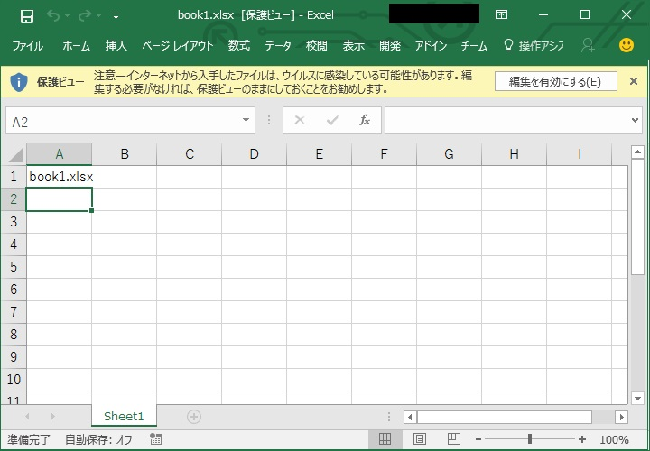
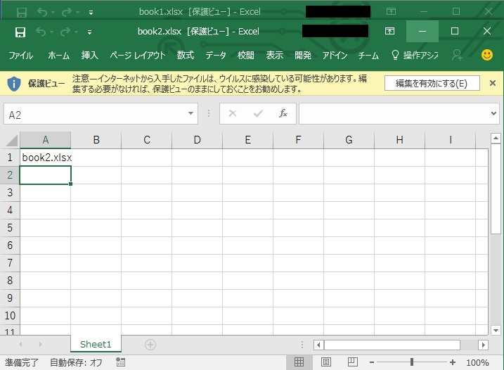
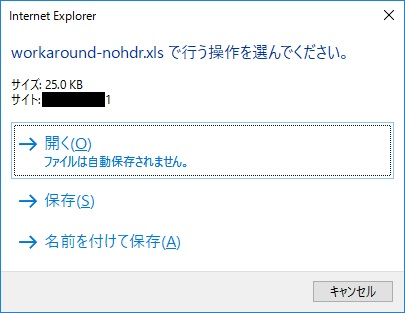
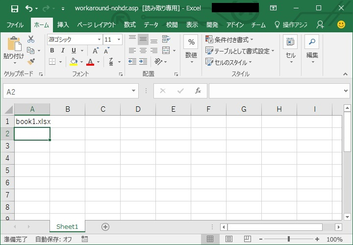
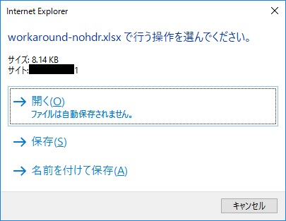
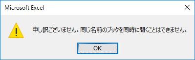

(※ 2016 年 8 月 1 日に Japan Office Support Blog に公開した情報のアーカイブです。)
こんにちは、Office サポートの 西川 (直) です。
1 つの Web ページから Excel ファイルを複数開いたとき、Web ページの構成によって、2 つ目以降のファイルに対して「同じ名前のファイルは開けません」というダイアログが表示され、Excel ファイルが開けないというお問い合わせを頂きます。
Web ページ上の Excel ファイルを開くとき、サーバーの応答の HTTP ヘッダーの content-disposition フィールドに attachment と filename を指定する必要がありますが、この指定をせず 1 つの Web ページ上から複数のファイルを開く場合、Excel 2010 より以前のバージョンではエラーダイアログの表示後、ファイルが開かれる動作となり、Excel 2013 以降ではセキュリティが強化されて入出力処理がよりセキュアとなっているため、エラーダイアログの表示後、ファイルが開かれない動作となります。
この記事では、このサーバーの応答の HTTP ヘッダーで content-disposition フィールドの attachmentと filename を指定する場合と指定しない場合の Excel の動作をご紹介します。
目次
- Web ページ上の Excel ファイルを直接開く場合の動作について
- Web ページ上の Office ファイルを 2 つ以上直接開けない現象について
- 関連情報
1.Web ページ上の Excel ファイルを直接開く場合の動作について
冒頭の説明の通り、Web ページ上の Excel ファイルを直接開く場合、サーバーの応答の HTTP ヘッダーの content-disposition フィールドに attachment と filenameを指定する必要があります。
例: ASP.net の場合
Response.AddHeader("Content-Disposition", "attachment; filename=" + [ファイル名])
以下、Excel を例とし、画像を交えながら、上記を指定した場合の例をご紹介します。
a) Web ページから “book1.xlsx” を開きます。
b) 以下のように “book1.xlsx” が開かれます。

c) Web ページから “book2.xlsx” を開きます。
d) 以下のように “book2.xlsx” が開かれます。

2. Web ページ上の Office ファイルが 2 つ以上直接開けない現象について
サーバーの応答の HTTP ヘッダーの content-disposition フィールドに、attachment の代わりに inline を指定している場合、2 つ目以降のファイルに対して「同じ名前のファイルは開けません」というダイアログが出て Excel ファイルが複数開けない現象が発生します。
以下、画像を交えながら、inline を指定した場合の例をご紹介します。
a) Web ページから “book1.xlsx” を開きます。

b) 以下のように “book1.xlsx” が開かれます。
ここで、Excel ファイルのタイトルには、” book1.xlsx” ではなく、Web ページ名が使用されます。

c) Web ページから “book2.xlsx” を開きます。

d) 「同じ名前のファイルは開けません」というダイアログが表示され、ファイルのオープンに失敗します。
これは、2 つ目の Excel ファイルのタイトルにも、Web ページ名が使用されるため、b) で開いた Excel ファイル名と重複することに起因します。

3. 参考情報
Title : Office 2013 のセキュリティの概要
URL : https://technet.microsoft.com/ja-jp/library/cc179050.aspx
Title : [HOWTO] ADODB.Stream オブジェクトを使用して ASP 経由でバイナリ ファイルをブラウザに送信する方法
URL : https://support.microsoft.com/ja-jp/kb/276488
本情報の検証用ブラウザには、Internet Explorer 11 を使用しています。
本情報の内容（添付文書、リンク先などを含む）は、作成日時点でのものであり、予告なく変更される場合があります。